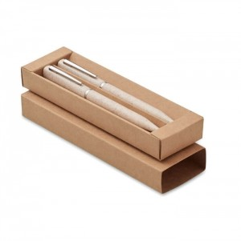

Em resumo
Ideias para acolhimento de equipas, reuniões, formação, visitas e encontros de trabalho. As famílias apresentadas são possibilidades a avaliar, não artigos obrigatórios.
Contexto em imagens


Destinatários e necessidades
Novos colaboradores
Podem precisar de informação de boas-vindas e de elementos úteis ao contexto de integração.
Equipas e participantes
Em reuniões e formação, considere quem participa, a duração e se a atividade envolve apontamentos ou materiais de apoio.
Visitantes e clientes
Uma lembrança deve corresponder ao motivo da visita e ao modo como será entregue, sem presumir que todas as pessoas querem o mesmo artigo.
Ocasiões, locais e épocas
Integração de uma pessoa na equipa
A ocasião destina-se a novos colaboradores e pode decorrer em contextos como receção, local de trabalho ou sessão de acolhimento. O momento — ao longo do ano, antes ou no momento de chegada — ajuda a enquadrar o objetivo de facilitar uma receção organizada e identificar informação que a pessoa possa consultar.
Reunião, formação ou encontro de equipa
A ocasião destina-se a equipas e a formadores e participantes e pode decorrer em contextos como sala de reunião, espaço de formação ou local do encontro. O momento — na data definida pela organização; encontros de fim de ano variam entre equipas — ajuda a enquadrar o objetivo de apoiar a participação sem substituir o material necessário à atividade.
Visita, aniversário de equipa ou encontro institucional
A ocasião destina-se a visitantes e a clientes e pode decorrer em contextos como receção, instalações ou espaço de evento. O momento — conforme a agenda da organização; não existe uma época universal — ajuda a enquadrar o objetivo de assinalar o contexto da visita ou do encontro, quando uma oferta fizer sentido.
Famílias de artigos a avaliar
Novos colaboradores
Objetivo
Acolhimento e consulta
Famílias a avaliar
Material de escrita, Cadernos e material
de organização, Sacos para reunir informação
Equipas e participantes
Objetivo
Reuniões e formação
Famílias a avaliar
Material de escrita, Cadernos, Artigos
para identificação da equipa
Visitantes e clientes
Objetivo
Lembrança de visita ou encontro
Famílias a avaliar
Sacos, Têxteis, Artigos de hidratação
Utilização e distribuição
- Prepare lotes por equipa ou sessão e identifique claramente qualquer material que não seja para distribuição geral.
- Se houver nomes, tamanhos ou versões diferentes, separe-os antes da entrega e defina como corrigir uma troca.
- Num encontro de fim de ano, confirme a data, os destinatários e o local concretos; não trate a ocasião como uma recomendação automática de oferta.
O que confirmar antes de escolher
- Quem recebe: equipa inteira, participantes, visitantes ou um grupo específico?
- Que necessidade concreta pretende apoiar e durante quanto tempo será usado o artigo?
- Como será transportado, guardado e distribuído no local?
- Que mensagem, identidade visual, quantidade e variantes precisam de aprovação?
- As famílias de artigos são possibilidades editoriais; confirme sempre a adequação, a personalização e as condições da opção concreta.
Perguntas frequentes
É necessário preparar a mesma oferta para todas as pessoas?
Não necessariamente. Defina primeiro os destinatários e a ocasião; uma solução comum só é adequada se corresponder às necessidades do grupo.
Os encontros de fim de ano têm uma data fixa?
Não. A data e o formato dependem da organização e da equipa; confirme a agenda antes de planear uma distribuição.